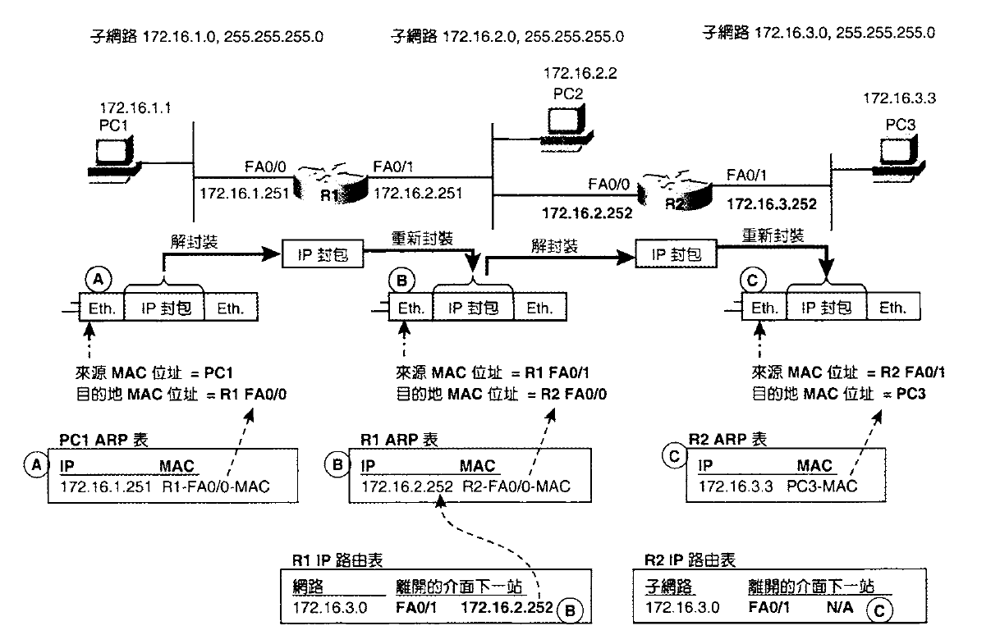
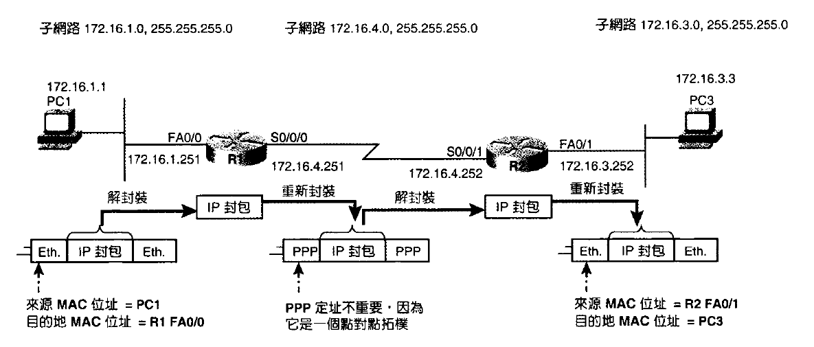
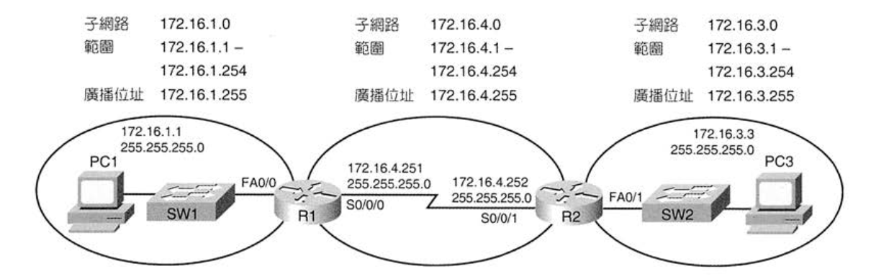
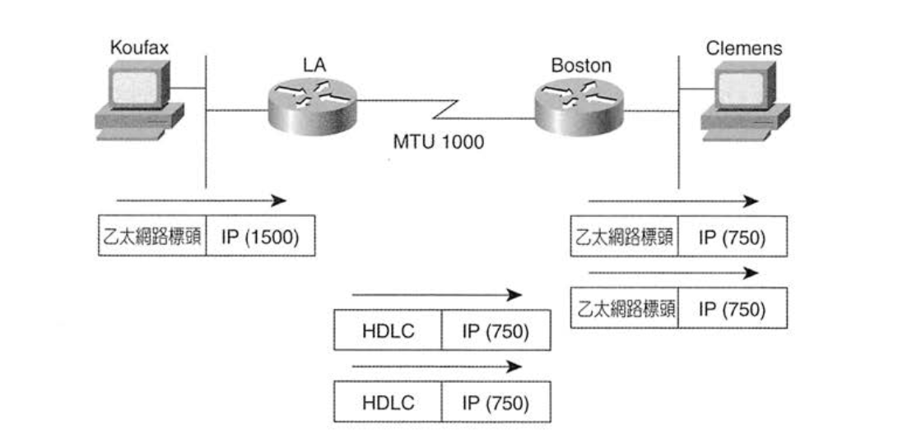
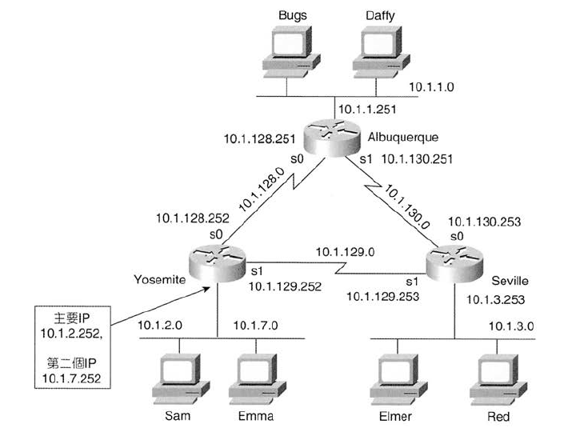
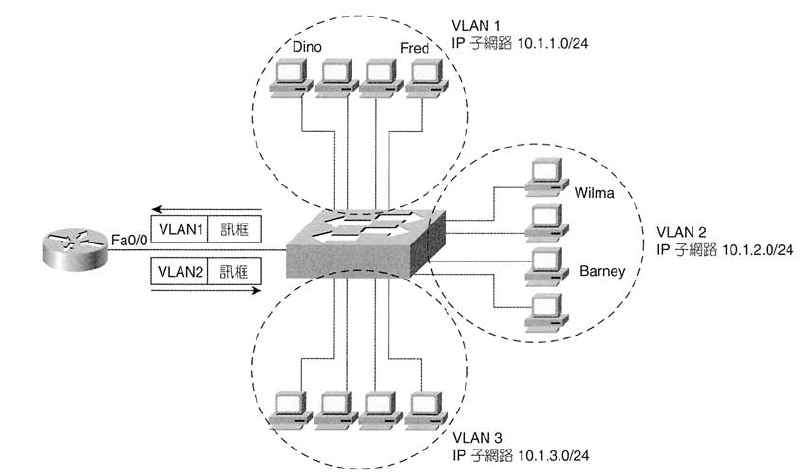

- 首頁
- 大二
- 大三
- 大四
- 英語相關
- 網路相關
- LAN Design
- Layer 2
- Layer 3
Routing
路由器在路由表中新增路徑主要有 3 種方式：
- 直連路徑
- 靜態路由
- 動態路由協定
路由運作模式
傳送封包前，比對自己和要傳送的封包的 IP 與 Netmask
- 如果在相同子網路，則傳送到目的主機，並透過 ARP 來尋找目的主機的 MAC Address
- 如果不在同個子網路，則傳送到 default gateway，並透過 ARP 來尋找 default gateway 的 MAC Address
路由器的運作步驟：
- 檢查傳送過來的每個訊框的訓框檢查碼(Frame Check Sequence, FCS)，如果發生錯誤則丟棄該訊框
- 檢查目的位址，若為路由器的位址或是廣播/群播位址，則會繼續處理
- 將訊框的標頭標尾丟棄，留下 IP 封包
- 查看路由表，尋找與目的地 IP 位址相符的路徑
- 決定封包傳送到下一台路由器或是目的主機
- 把 IP 封包封裝到新的 L2 標頭與標尾，將訊框從合適的介面傳出

WAN 鏈路與 LAN 鏈路運作方法大致相同，但點對點鏈路不需要 ARP 表，因為最多只有一台路由器連接到它，因此可以省略 L2 的定址。然而使用訊框中繼時，路由程序需要 L2 的位址，稱為 資料鏈結識別碼 (Data-link Connection Identifier, DLCI) (會在之後提到)

IP/Subnet
- 每個 IP 屬於 A, B 或 C 級網路 (分級式IP網路)
- 子網路用十進位 (e.g. 255.255.255.0) 或首碼表示 (e.g. /24)
- 相同 Subnet 的設備應使用相同 Netmask，否則會對路由造成錯誤的判斷
- 相同 VLAN 應在相同 Subnet

Longest Prefix Match
當路由表的 Subnet 發生重疊時：
- 使用自動彙整
- 手動彙整路徑
- 使用靜態路由
- 不正確的子網路切割設計，導致子網路位址範圍的重疊
路由表會使用 最精確的路徑 (首碼最長的路徑)，舉例來說：
1 | R1# show ip route rip |
則
172.16.1.1：與 5 條都相符，首碼最長到 /32，所以走 172.16.1.1/32
172.16.1.2：與 4 條都相符，首碼最長到 /24，所以走 172.16.1.0/24
172.16.2.3：與 3 條都相符，首碼最長到 /22，所以走 172.16.0.0/22
172.16.4.3：與 2 條都相符，首碼最長到 /16，所以走 172.16.0.0/16
切割與MTU
TCP/IP 為 IP 封包定義一個最大長度，稱為 最大傳輸單元 (MTU)，MTU 長度視設定和介面功能而定，預設情況，電腦根據 L2 訊框的資料部分的最大長度來計算介面的 MTU，例如乙太網路的預設 MTU 為 1500
路由器與所有 IP 主機相同，如果封包超過 MTU，路由器就不能透過介面轉送封包，因此需要透過 切割，將封包分成數個不超過 MTU 的封包

IP 標頭包含一個 ID 值 (切割後每個封包的 ID 值相同) 和一個偏移值 (定義切割後的封包在原始封包的位置)，透過偏移欄位可以依序重組回原封包
直連網路
Secondary IP Address
Secondary IP Address 是在相同的資料鏈結中使用多個網路或子網路。透過在同一介面上使用多個子網路，增加可用 IP 位址的數量。為此，在每一個子網路中，路由器都需要一個 IP 位址，以便子網路下的機器有 default gateway。

缺點：LAN 中主機 Routing 效率較低。若 10.1.2.0 要傳給 10.1.7.0 中需要過 Router 再下去
Zero Subnet
Zero subnet 是每個分級式網路的其中一個子網路，二進制子網路編號中的子網路部分均為 0。以十進制表示時，Zero subnet 與分級式網路的編號相同。設定 no ip subnet-zero 後，路由器即拒絕任何使用 zero-subnet 的 ip address 指令。
ISL & 802.1Q

路由器的 Fa0/0 可以透過建立 3 個 Subinterface，每個 Subinterface 上分配一個 IP 及 VLAN (encapsulation <protocol> <vlan-id>)，來連接 Switch 上的 Trunk link
靜態路由
1 | (config)# ip route 192.168.1.0 255.255.255.0 192.168.12.2 |
Default route
1 | (config)# ip route 0.0.0.0 0.0.0.0 <next-hop> |
或
1 | (config)# ip default-network <next-number> |
分級與無級式遶送
| 分級式(只看懂A,B,C級網路) | 無級式 | |
|---|---|---|
| 位址 | 分為: 網路、子網路、主機 | 分為子網路、主機 |
| 遶送協定 | 不支援遮罩，不支援 VLSM | 通告遮罩、支援 VLSM |
| 遶送 | 受預設路徑使用方式的限制 | 不受預設路徑使用方式限制 |